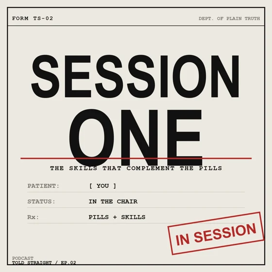
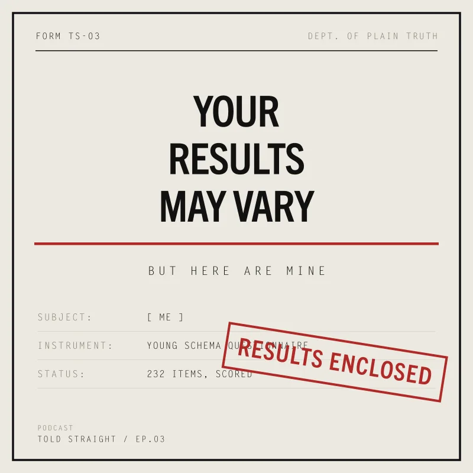

Doc. TS‑SITE‑001 · Status: In ProductionDistribution: Public
Told Straight
Declassify On
06 Aug 2026
09:00 EDT
Dept. of Neurodevelopmental Affairs
Evidence-based deep dives — one subject a season, researched to the studs and told to you straight. The real evidence, read carefully and said plainly. No hype, no hedging.
Season One
Adult ADHD
What it actually is, what the evidence really says, and what to do with it.
Time to Declassification
—
Meet the Team
One real host asking the tough questions A panel of AI-generated experts with the no BS answers (with receipts and citations)
Real Person · Host
Jared Godar
Host · Creator
No Such PersonAI-Generated Voice & Face
Dr. Mei-Lin Chao
Genetics & Heritability
No Such PersonAI-Generated Voice & Face
Dr. Michael Voss
Research Methods
No Such PersonAI-Generated Voice & Face
Dr. Yolanda Bridges
Education & Accommodation
No Such PersonAI-Generated Voice & Face
Dr. Rosa Villalobos
Pharmacology
No Such PersonAI-Generated Voice & Face
Owen
Research · Lived Experience
No Such PersonAI-Generated Voice & Face
Dr. Anna Sinclair
Clinical Practice
No Such PersonAI-Generated Voice & Face
Hector Salazar
Executive Function Coaching
Real evidence from fake experts.Not fake evidence from real ones.
The host (real) & the cast (AI-generated)Told Straight / Studio
Request Clearance
Notify on Release
One email, when it’s live — nothing else.
By submitting you consent to us storing your address for this purpose — see the Privacy Policy.
GDPR & US state privacy rights honored · we never sell, share or rent your address.
Caution — AI-Generated Voices & Faces
The host, Jared Godar, is a real person. His voice and likeness are his own.
Every other cast member is AI-generated — an invented voice and face, not a real person. Each says so, in its own voice, on the show.
Told Straight is researched general information, not medical, psychological, or legal advice.
Works Cited
Receipts for the receipts
Every claim on this show is traceable to a source. Here are the sources for the
first three episodes — the papers themselves, not summaries of them. Nothing below spoils an
episode; it just shows what the work is built on.
Faraone, S. V., & Larsson, H. (2018). Genetics of attention deficit hyperactivity disorder. Molecular Psychiatry, 24(4), 562–575. doi · PubMed · PMC full text
Faraone, S. V., Perlis, R. H., Doyle, A. E., Smoller, J. W., Goralnick, J. J., Holmgren, M. A., & Sklar, P. (2005). Molecular Genetics of Attention-Deficit/Hyperactivity Disorder. Biological Psychiatry, 57(11), 1313–1323. doi · PubMed
Faraone, S. V., Banaschewski, T., Coghill, D., Zheng, Y., Biederman, J., Bellgrove, M. A., Newcorn, J. H., Gignac, M., Al Saud, N. M., Manor, I., Rohde, L. A., Yang, L., Cortese, S., Almagor, D., Stein, M. A., Albatti, T. H., Aljoudi, H. F., Alqahtani, M. M. J., Asherson, P., … Wang, Y. (2021). The World Federation of ADHD International Consensus Statement: 208 Evidence-based conclusions about the disorder. Neuroscience & Biobehavioral Reviews, 128, 789–818. doi · PubMed · PMC full text
Faraone, S. V., Asherson, P., Banaschewski, T., Biederman, J., Buitelaar, J. K., Ramos-Quiroga, J. A., Rohde, L. A., Sonuga-Barke, E. J. S., Tannock, R., & Franke, B. (2015). Attention-deficit/hyperactivity disorder. Nature Reviews Disease Primers, 1(1). doi · PubMed
Shaw, P., Eckstrand, K., Sharp, W., Blumenthal, J., Lerch, J. P., Greenstein, D., Clasen, L., Evans, A., Giedd, J., & Rapoport, J. L. (2007). Attention-deficit/hyperactivity disorder is characterized by a delay in cortical maturation. Proceedings of the National Academy of Sciences, 104(49), 19649–19654. doi · PubMed · PMC full text
Song, P., Zha, M., Yang, Q., Zhang, Y., Li, X., & Rudan, I. (2021). The prevalence of adult attention-deficit hyperactivity disorder: A global systematic review and meta-analysis. Journal of Global Health, 11. doi · PubMed · PMC full text
Episode OneMembership Has Requirements: Adult ADHD, Told Straight
Cortese, S., Adamo, N., Del Giovane, C., Mohr-Jensen, C., Hayes, A. J., Carucci, S., Atkinson, L. Z., Tessari, L., Banaschewski, T., Coghill, D., Hollis, C., Simonoff, E., Zuddas, A., Barbui, C., Purgato, M., Steinhausen, H. C., Shokraneh, F., Xia, J., & Cipriani, A. (2018). Comparative efficacy and tolerability of medications for attention-deficit hyperactivity disorder in children, adolescents, and adults: a systematic review and network meta-analysis. The Lancet Psychiatry, 5(9), 727–738. doi · PubMed · PMC full text
The MTA Cooperative Group (1999). A 14-Month Randomized Clinical Trial of Treatment Strategies for Attention-Deficit/Hyperactivity Disorder. Archives of General Psychiatry, 56(12), 1073. doi · PubMed
Dalsgaard, S., Østergaard, S. D., Leckman, J. F., Mortensen, P. B., & Pedersen, M. G. (2015). Mortality in children, adolescents, and adults with attention deficit hyperactivity disorder: a nationwide cohort study. The Lancet, 385(9983), 2190–2196. doi · PubMed
Chang, Z., Quinn, P. D., Hur, K., Gibbons, R. D., Sjölander, A., Larsson, H., & D’Onofrio, B. M. (2017). Association Between Medication Use for Attention-Deficit/Hyperactivity Disorder and Risk of Motor Vehicle Crashes. JAMA Psychiatry, 74(6), 597. doi · PubMed · PMC full text
Lichtenstein, P., Halldner, L., Zetterqvist, J., Sjölander, A., Serlachius, E., Fazel, S., Långström, N., & Larsson, H. (2012). Medication for Attention Deficit–Hyperactivity Disorder and Criminality. New England Journal of Medicine, 367(21), 2006–2014. doi · PubMed · PMC full text
Quinn, P. D., Chang, Z., Hur, K., Gibbons, R. D., Lahey, B. B., Rickert, M. E., Sjölander, A., Lichtenstein, P., Larsson, H., & D’Onofrio, B. M. (2017). ADHD Medication and Substance-Related Problems. American Journal of Psychiatry, 174(9), 877–885. doi · PubMed · PMC full text
Zheng, Q., Wang, X., Chiu, K. Y., & Shum, K. K. m. (2020). Time Perception Deficits in Children and Adolescents with ADHD: A Meta-analysis. Journal of Attention Disorders, 26(2), 267–281. doi · PubMed
Sonuga-Barke, E. J. S. (2003). The dual pathway model of AD/HD: an elaboration of neuro-developmental characteristics. Neuroscience & Biobehavioral Reviews, 27(7), 593–604. doi · PubMed
Karalunas, S. L., & Huang-Pollock, C. L. (2011). Examining Relationships Between Executive Functioning and Delay Aversion in Attention Deficit Hyperactivity Disorder. Journal of Clinical Child & Adolescent Psychology, 40(6), 837–847. doi · PubMed · PMC full text
Beheshti, A., Chavanon, M. L., & Christiansen, H. (2020). Emotion dysregulation in adults with attention deficit hyperactivity disorder: a meta-analysis. BMC Psychiatry, 20(1). doi · PubMed · PMC full text
Safren, S. A., Sprich, S., Mimiaga, M. J., Surman, C., Knouse, L., Groves, M., & Otto, M. W. (2010). Cognitive Behavioral Therapy vs Relaxation With Educational Support for Medication-Treated Adults With ADHD and Persistent Symptoms. JAMA, 304(8), 875. doi · PubMed · PMC full text
Safren, S. A., Otto, M. W., Sprich, S., Winett, C. L., Wilens, T. E., & Biederman, J. (2005). Cognitive-behavioral therapy for ADHD in medication-treated adults with continued symptoms. Behaviour Research and Therapy, 43(7), 831–842. doi · PubMed
Pan, M. R., Dong, M., Zhang, S. Y., Liu, L., Li, H. M., Wang, Y. F., & Qian, Q. J. (2024). One-year follow-up of the effectiveness and mediators of cognitive behavioural therapy among adults with attention-deficit/hyperactivity disorder: secondary outcomes of a randomised controlled trial. BMC Psychiatry, 24(1). doi · PubMed · PMC full text
Knouse, L. E., Teller, J., & Brooks, M. A. (2017). Meta-analysis of cognitive–behavioral treatments for adult ADHD. Journal of Consulting and Clinical Psychology, 85(7), 737–750. doi · PubMed
Lopez, P. L., Torrente, F. M., Ciapponi, A., Lischinsky, A. G., Cetkovich-Bakmas, M., Rojas, J. I., Romano, M., & Manes, F. F. (2018). Cognitive-behavioural interventions for attention deficit hyperactivity disorder (ADHD) in adults. Cochrane Database of Systematic Reviews, 2018(3). doi · PubMed · PMC full text

Episode TwoSession One: The Skills That Complement the Pills
Seery, C., Leonard-Curtin, A., Naismith, L., King, N., O'Donnell, F., Byrne, B., Boyd, C., Kilbride, K., Wrigley, M., McHugh, L., & Bramham, J. (2024). Feasibility of the Understanding and Managing Adult ADHD Programme: open-access online group psychoeducation and acceptance and commitment therapy for adults with attention-deficit hyperactivity disorder. BJPsych Open, 10(5). doi · PubMed · PMC full text
Normann, N., & Morina, N. (2018). The Efficacy of Metacognitive Therapy: A Systematic Review and Meta-Analysis. Frontiers in Psychology, 9. doi · PubMed · PMC full text
Normann, N., van Emmerik, A. A. P., & Morina, N. (2014). THE EFFICACY OF METACOGNITIVE THERAPY FOR ANXIETY AND DEPRESSION: A META-ANALYTIC REVIEW. Depression and Anxiety, 31(5), 402–411. doi · PubMed
Solanto, M. V., Marks, D. J., Wasserstein, J., Mitchell, K., Abikoff, H., Alvir, J. M. J., & Kofman, M. D. (2010). Efficacy of Meta-Cognitive Therapy for Adult ADHD. American Journal of Psychiatry, 167(8), 958–968. doi · PubMed · PMC full text
Philipsen, A., Lam, A. P., Breit, S., Lücke, C., Müller, H. H., & Matthies, S. (2016). Early maladaptive schemas in adult patients with attention deficit hyperactivity disorder. ADHD Attention Deficit and Hyperactivity Disorders, 9(2), 101–111. doi · PubMed
Kiraz, S., & Sertçelik, S. (2021). Adult attention deficit hyperactivity disorder and early maladaptive schemas. Clinical Psychology & Psychotherapy, 28(5), 1055–1064. doi · PubMed
Krishnamoorthy, T., Das, S., & Thomas, N. (2026). Stigma in adults with ADHD: a systematic review of types, experiences, and potential implications for quality of life. Frontiers in Psychiatry, 17. doi · PubMed · PMC full text
Philipsen, A., Lam, A. P., Breit, S., Lücke, C., Müller, H. H., & Matthies, S. (2016). Early maladaptive schemas in adult patients with attention deficit hyperactivity disorder. ADHD Attention Deficit and Hyperactivity Disorders, 9(2), 101–111. doi · PubMed
Kiraz, S., & Sertçelik, S. (2021). Adult attention deficit hyperactivity disorder and early maladaptive schemas. Clinical Psychology & Psychotherapy, 28(5), 1055–1064. doi · PubMed
Hoza, B., Mrug, S., Gerdes, A. C., Hinshaw, S. P., Bukowski, W. M., Gold, J. A., Kraemer, H. C., Pelham, W. E., Wigal, T., & Arnold, L. E. (2005). What Aspects of Peer Relationships Are Impaired in Children With Attention-Deficit/Hyperactivity Disorder? Journal of Consulting and Clinical Psychology, 73(3), 411–423. doi · PubMed
Shaw, P., Stringaris, A., Nigg, J., & Leibenluft, E. (2014). Emotion Dysregulation in Attention Deficit Hyperactivity Disorder. American Journal of Psychiatry, 171(3), 276–293. doi · PubMed · PMC full text
Barkley, R. A. (1997). Behavioral inhibition, sustained attention, and executive functions: Constructing a unifying theory of ADHD. Psychological Bulletin, 121(1), 65–94. doi · PubMed
Sonuga-Barke, E. J. S. (2003). The dual pathway model of AD/HD: an elaboration of neuro-developmental characteristics. Neuroscience & Biobehavioral Reviews, 27(7), 593–604. doi · PubMed

Episode ThreeSession Two: The Results Are In
Marx, I., Hacker, T., Yu, X., Cortese, S., & Sonuga-Barke, E. (2018). ADHD and the Choice of Small Immediate Over Larger Delayed Rewards: A Comparative Meta-Analysis of Performance on Simple Choice-Delay and Temporal Discounting Paradigms. Journal of Attention Disorders, 25(2), 171–187. doi · PubMed
Jackson, J. N. S., & MacKillop, J. (2016). Attention-Deficit/Hyperactivity Disorder and Monetary Delay Discounting: A Meta-Analysis of Case-Control Studies. Biological Psychiatry: Cognitive Neuroscience and Neuroimaging, 1(4), 316–325. doi · PubMed · PMC full text
Sergeant, J. A. (2005). Modeling Attention-Deficit/Hyperactivity Disorder: A Critical Appraisal of the Cognitive-Energetic Model. Biological Psychiatry, 57(11), 1248–1255. doi · PubMed
van der Putten, W. J., Mol, A. J. J., Groenman, A. P., Radhoe, T. A., Torenvliet, C., van Rentergem, J. A. A., & Geurts, H. M. (2024). Is camouflaging unique for autism? A comparison of camouflaging between adults with autism and ADHD. Autism Research, 17(4), 812–823. doi · PubMed
Gollwitzer, P. M., & Sheeran, P. (2006). Implementation Intentions and Goal Achievement: A Meta‐analysis of Effects and Processes. Advances in Experimental Social Psychology, 69–119. doi
Safren, S. A., Sprich, S., Mimiaga, M. J., Surman, C., Knouse, L., Groves, M., & Otto, M. W. (2010). Cognitive Behavioral Therapy vs Relaxation With Educational Support for Medication-Treated Adults With ADHD and Persistent Symptoms. JAMA, 304(8), 875. doi · PubMed · PMC full text
Solanto, M. V., Marks, D. J., Wasserstein, J., Mitchell, K., Abikoff, H., Alvir, J. M. J., & Kofman, M. D. (2010). Efficacy of Meta-Cognitive Therapy for Adult ADHD. American Journal of Psychiatry, 167(8), 958–968. doi · PubMed · PMC full text
Knouse, L. E., Teller, J., & Brooks, M. A. (2017). Meta-analysis of cognitive–behavioral treatments for adult ADHD. Journal of Consulting and Clinical Psychology, 85(7), 737–750. doi · PubMed
Levin, M. E., Hildebrandt, M. J., Lillis, J., & Hayes, S. C. (2012). The Impact of Treatment Components Suggested by the Psychological Flexibility Model: A Meta-Analysis of Laboratory-Based Component Studies. Behavior Therapy, 43(4), 741–756. doi · PubMed
Beaton, D. M., Sirois, F., & Milne, E. (2022). The role of self‐compassion in the mental health of adults with ADHD. Journal of Clinical Psychology, 78(12), 2497–2512. doi · PubMed · PMC full text
Normann, N., & Morina, N. (2018). The Efficacy of Metacognitive Therapy: A Systematic Review and Meta-Analysis. Frontiers in Psychology, 9. doi · PubMed · PMC full text